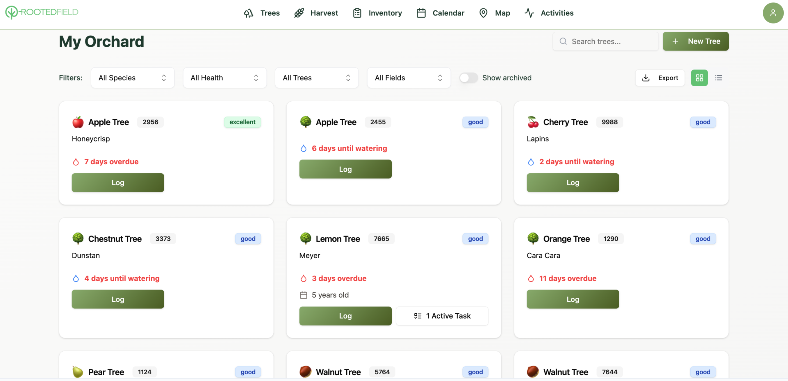

One record per tree.
Keep species, variety, planting details, health status, notes, and care history together instead of scattered across notebooks and sheets.
Individual tree management
Organize individual tree records, monitor health, track care, manage locations, and build a useful history from planting through production.

Keep species, variety, planting details, health status, notes, and care history together instead of scattered across notebooks and sheets.
Search and filter your orchard while keeping watering dates, active tasks, and health information visible.
Turn seasonal observations, treatments, growth, and productivity into a record you can use year after year.
A clearer orchard
RootedField gives each tree a home for the information that matters. See what was planted, where it is, how it is performing, what care it received, and what should happen next.
See activity trackingBetter tree records
Bring health, care, location, and activity records into one simple platform.